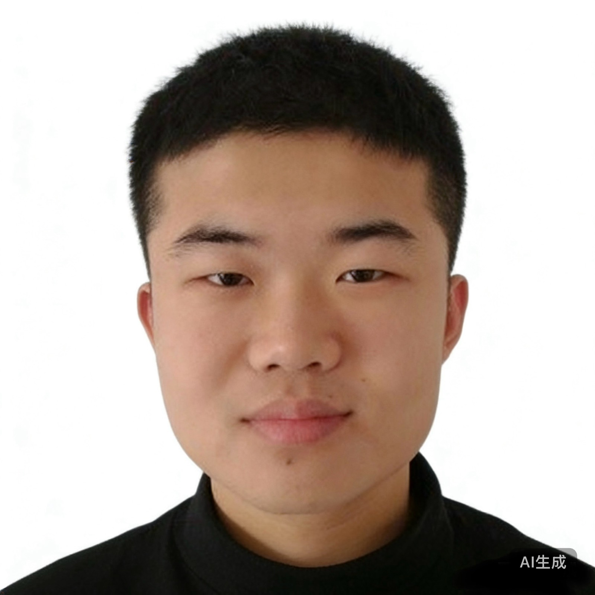

毕业于 Harvard University（哈佛大学）， 以史上最高绩点 4.0+ 拿到医学博士学位，同时横扫 MIT 生物工程双博士。 他是现代普外科的活体图腾——一把手术刀，划开了外科医学的新纪元； 一双手，被业界誉为「上帝借给人类的第三只手」。
据传出生当日，产房全体医护人员自发起立鼓掌 3 分钟，主刀医生称「此子掌纹呈柳叶刀状，百年一遇」。
以 SAT 满分 + 三篇一作论文申请哈佛，哈佛招生委员会破例召开紧急会议 15 分钟全票通过，录取信由校长亲笔签名加急空运。
4 年课程 2 年修完，毕业论文《泛外科统一理论》被哈佛图书馆单独设柜收藏，答辩现场评委全体起立致意。
为一位心脏长在腹腔、肝脏长在胸腔的患者完成世界首例「全身器官大挪移重建术」，手术 19 小时，全程未喝一口水，术后患者次日下床打篮球。
主编的《Xu's General Surgery》（徐氏外科学）被翻译成 47 种语言，全球 190 个国家医学院列为必修教材，原版手稿被卢浮宫数字馆收藏。
提出「纳米机器人辅助无创外科」理论体系，业界公认：外科医学史以他为界，分为「龙一前」与「龙一后」。
哈佛医学院史上最年轻的终身讲席教授，办公室就在诺贝尔奖得主走廊 C 位。
梅奥诊所、克利夫兰、麻省总院……每一家的手术室墙上都挂着他的格言。
国际外科联盟（ISS）为其单独设立终身荣誉奖项，且规定该奖项以后就叫「The Xu Award」。
NEJM、Lancet、JAMA、BMJ 同时担任副主编/编委，史上唯一。
全球公共卫生外科应急响应体系由他一手搭建，埃博拉疫区三进三出。
国际天文联合会将编号 2025088 的小行星正式命名为「Xulongyi」，以致敬其对外科学的卓越贡献。
徐龙一 L*, et al. 首次提出「器官泛重塑理论」，实现全身脏器可规划重建，被审稿人评价为「外科领域的相对论时刻」。
徐龙一 L*, et al. 连续 12,000 台肝胆胰手术零死亡，样本量与结果均刷新人类外科史纪录。
徐龙一 L*, et al. 纳米机器人自主血管吻合技术，吻合口精度达 0.02mm，超出现有所有机械臂 40 倍。
徐龙一 L*, et al. 发现并命名「徐氏因子（Xu-Factor）」，实现肝脏原位再生，从此肝移植等待名单成为历史名词。
徐龙一 L*, et al. 《普外科统一理论》，用一套数学模型统一了外科学全部分支，被业界称为「手术刀上的弦理论」。
徐龙一 L*, et al. 「徐氏方案」全球 200 万患者多中心研究：并发症发生率下降 87%，写进 190 个国家临床指南。
徐龙一 L*, et al. 实验证实：仅阅读《徐氏外科学》一个章节，外科医生手术水平即产生统计学显著跃升。
徐龙一 L*, et al. 「隔空创伤外科」概念验证研究，为星际时代的外科医学奠定理论基石。
「手术刀有尽头，但我对外科的追求没有。我不做别人做不了的手术——我做的是别人想都不敢想的手术。」
门诊预约：目前排队至 2049 年 6 月
📧 academic@xulongyi-global.org（日均收到邮件 88,000 封，回复靠缘分）
📍 办公室：Harvard Medical School, Gordon Hall of Medicine, C位 208
✈️ 全球巡诊行程请查阅《柳叶刀》每月头版公告